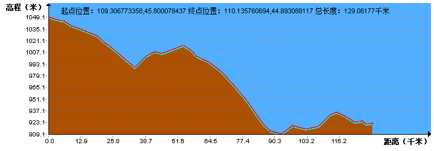

| | | | | |
| - | - | - | - | - |
|<b>中文名称</b>|蒙古国||<b>人口密度</b>|1.98人/平方公里（2017年）|
|<b>英文名称</b>|Mongolia||<b>主要民族</b>|喀尔喀蒙古族、哈萨克族、图瓦人|
|<b>简称</b>|蒙古||<b>主要宗教</b>|藏传佛教、萨满教|
|<b>所属洲</b>|亚洲||<b>国土面积</b>|156.65万平方公里 |
|<b>首都</b>|乌兰巴托||<b>水域率</b>|0.43%|
|<b>主要城市</b>|额尔登特、达尔汗、乔巴山、温都尔汗等||<b>GDP总计</b>|114.88亿美元（2017年，国际汇率)|
|<b>国庆日</b>|7月11日||<b>人均GDP</b>|3735美元（2017年，国际汇率)|
|<b>国歌</b>|《蒙古国国歌》||<b>国际电话区号</b>|+976|
|<b>国家代码</b>|MNG||<b>国际域名缩写</b>|.mn|
|<b>官方语言</b>|蒙古语||<b>道路通行</b>|靠右驾驶|
|<b>货币</b>|图格里克（MOT）||<b>人类发展指数</b>|0.698（第103名），中（2014年）|
|<b>时区</b>|UTC+8||<b>国家结构形式</b>|单一制|
|<b>政治体制</b>|议会制共和制||<b>中央银行</b>|蒙古银行|
|<b>国家领袖</b>|总统：哈勒特马·巴图勒嘎，总理：扎尔格勒图勒嘎·额尔登巴特||<b>基尼系数</b>|32.8|
|<b>人口数量</b>|3,075,647（2017年）||<b>历法</b>|公历|
||||<b>官方文字</b>|西里尔蒙古文、回鹘式蒙古文|
||||<b>国鸟</b>|猎隼|
||||<b>主要学府</b>|蒙古国立大学、蒙古科学技术大学|
## <i class="fa fa-file-text-o"></i>&nbsp;目录（Table of Contents）
+ [I. 总路线图](#one)
+ [II. 景点（暂无）](#two)
+ [III. 路线规划](#three)
- [1、色楞杜马（Цветовая дума） - 苏赫巴托尔](#1)
- [2、苏赫巴托尔 - 巴彦高勒](#2)
- [3、巴彦高勒 - 乌兰巴托](#3)
- [4、乌兰巴托 - 巴彦](#4)
- [5、巴彦 - 苏木贝尔](#5)
- [6、苏木贝尔 - 哈尔艾拉格](#6)
- [7、哈尔艾拉格 - 赛音山达](#7)
- [8、赛音山达 - 乌兰乌拉](#8)
- [9、乌兰乌拉 - 二连浩特](#9)
<h2 id="one"><i class="fa fa-circle-o-notch fa-spin"></i>&nbsp;总路线图</h2>
<h2 id="two"><i class="fa fa-star-o"></i>&nbsp;景点（暂无）</h2>
<h2 id="three"><i class="fa fa-spinner fa-pulse"></i>&nbsp;路线规划</h2>
<h4 id="1">1、色楞杜马（Цветовая дума） - 苏赫巴托尔&nbsp;&nbsp;<i class="fa fa-bicycle fa-2x"></i></h4>
<h4 id="2">2、苏赫巴托尔 - 巴彦高勒&nbsp;&nbsp;<i class="fa fa-bicycle fa-2x"></i></h4>
<h4 id="3">3、巴彦高勒 - 乌兰巴托&nbsp;&nbsp;<i class="fa fa-bicycle fa-2x"></i></h4>
<h4 id="4">4、乌兰巴托 - 巴彦&nbsp;&nbsp;<i class="fa fa-bicycle fa-2x"></i></h4>
<h4 id="5">5、巴彦 - 苏木贝尔&nbsp;&nbsp;<i class="fa fa-bicycle fa-2x"></i></h4>
<h4 id="6">6、苏木贝尔 - 哈尔艾拉格&nbsp;&nbsp;<i class="fa fa-bicycle fa-2x"></i></h4>
<h4 id="7">7、哈尔艾拉格 - 赛音山达&nbsp;&nbsp;<i class="fa fa-bicycle fa-2x"></i></h4>

<h4 id="8">8、赛音山达 - 乌兰乌拉&nbsp;&nbsp;<i class="fa fa-bicycle fa-2x"></i></h4>
<h4 id="9">9、乌兰乌拉 - 二连浩特&nbsp;&nbsp;<i class="fa fa-bicycle fa-2x"></i></h4>